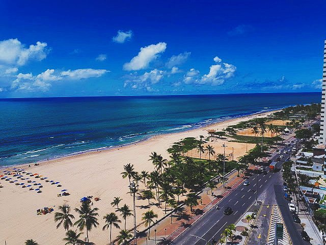
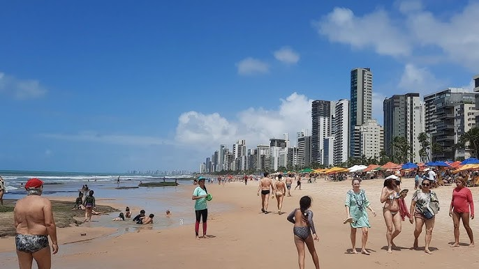
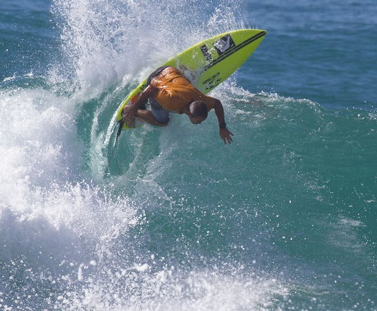

A Praia do Pina está localizada na zona sul do Recife, próxima à Praia de Boa Viagem. É uma praia urbana que tem ganhado destaque entre moradores e turistas por sua beleza natural, mar calmo em alguns trechos e por ser um ótimo local para caminhada, prática de esportes e lazer em família.
Menos movimentada do que Boa Viagem, a Praia do Pina oferece uma experiência mais tranquila, com barraquinhas à beira-mar, restaurantes e espaços onde os visitantes podem relaxar e aproveitar a vista para o mar. É também um local querido pelos surfistas, que aproveitam as boas ondas em determinados pontos da praia.


A Praia do Pina é frequentemente palco de eventos esportivos e culturais, como campeonatos de surfe, corridas e encontros musicais. Sua faixa de areia larga e o calçadão revitalizado atraem pessoas que gostam de correr, andar de bicicleta ou simplesmente observar o nascer do sol.
Assim como Boa Viagem, a Praia do Pina também apresenta áreas com risco de ataques de tubarão, principalmente em locais mais fundos. Por isso, é importante seguir as orientações das placas de sinalização e evitar nadar fora das áreas protegidas por recifes.
Mesmo com esses cuidados, a Praia do Pina continua sendo um local agradável e cheio de vida, ideal para quem busca contato com a natureza sem sair da cidade.